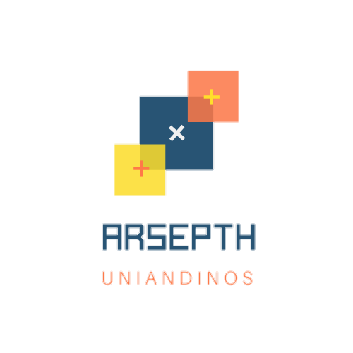

Look for Food (Loood) es una iniciativa propuesta por estudiantes de primer semestre en la Universidad de los Andes.
Esta iniciativa establece una aplicación web que permite a sus usuarios analizar sus comidas a partir de una foto tomada por ellos.
De este modo, se procesan los datos recibidos por la imagen para finalmente recolectar y mostrar comercios, restaurantes, sitios, o información en un solo lugar, de manera unificada, interactiva, y sintetizada.

Unificamos, vinculamos e identificamos automáticamente los datos de platos de comidas específicos. De este modo, ofrecemos valor para todas las industrias alimentarias, al permitirles destacar en nuestro sitio y mostrarse cuando un usuario analice su comida. Todo esto sintetizado en un solo espacio y un solo vistazo.